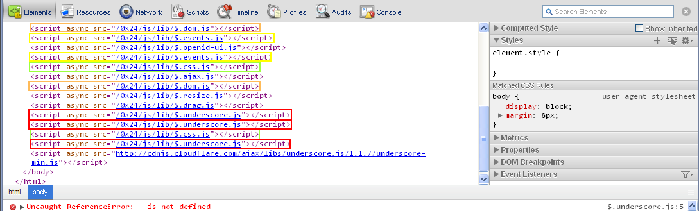

Include.js, LazyLoad.js, etc.
Include.js does not claim to manage dependencies. It is only being used here to demonstrate the difference between a barebones loader and one that manages dependencies. Include.js, LazyLoader.js and other barebones loaders just load the files you tell them to, requiring you to manage all of your dependencies manually. This becomes a problem as soon as you have two or more modules that share one or more dependencies. As the added highlights show in the screen shot below, most modules where loaded 2 - 3 times. Subsequent loads will most likely be taken from the cache, but the code in them will run every time a script tag is added for it which is likely to produce undesirable results at some point.
